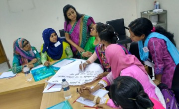
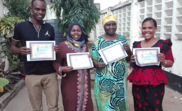
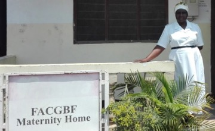

{% blocktrans %}
How FIGO Used Mobile Data
{% blocktrans %}
How FIGO Used Mobile Data
Collection to Improve Maternal
Healthcare
{% endblocktrans %}
{% blocktrans %} The International Federation of Gynecology and Obstetrics are improving healthcare for over 214 million women looking to avoid pregnancy. {% endblocktrans %}
{% blocktrans %}
Read More >
{% endblocktrans %}

{% blocktrans %}
Midline Research Reveals
{% blocktrans %}
Midline Research Reveals
Promising Results for Partograph
Labour App
{% endblocktrans %}
{% blocktrans %} Seven months into the mLabour app in Tanzania and results are promising. 93 percent of eligible pregnancies were tracks and patient satisfaction is very positive. {% endblocktrans %}
{% blocktrans %} Read More > {% endblocktrans %}

{% blocktrans %}
Using Mobile Solutions to Improve
{% blocktrans %}
Using Mobile Solutions to Improve
Intrapartum Care in Tanzania
{% endblocktrans %}
{% blocktrans %} A group of private healthcare groups in Tanzania digitized the partograph to provide real-time decision support to health workers in 3 health facilities across the country. {% endblocktrans %}